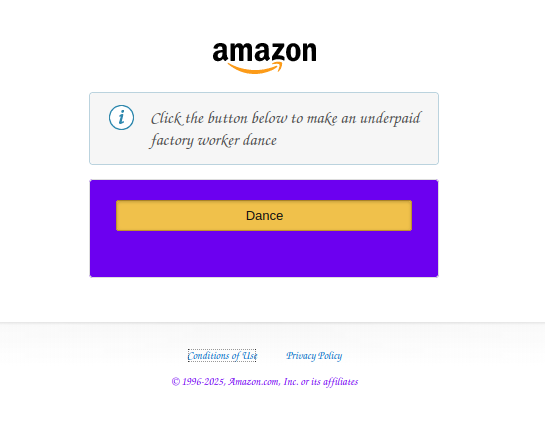

My Dev Tools Vandalism
I used browser developer tools to temporarily "vandalize" a website. Below is a screenshot showing my changes. These edits only appeared on my computer and did not affect the actual website.

What I "Vandalized"
- What text did you edit? The text in the notice box and button
- What CSS properties did you modify? The font of all the text and the background color of the button box
- What made your edits interesting or amusing? Commentary on the company
- Did you understand why some changes worked and some didn't? Yes
- Why did you choose the changes you did? I was improvising
- Were you able to understand how the HTML and CSS worked together to make the changes you made? Yes
- Do you think you have a better sense of how dev tools can be used while crafting your own webpages? Yes